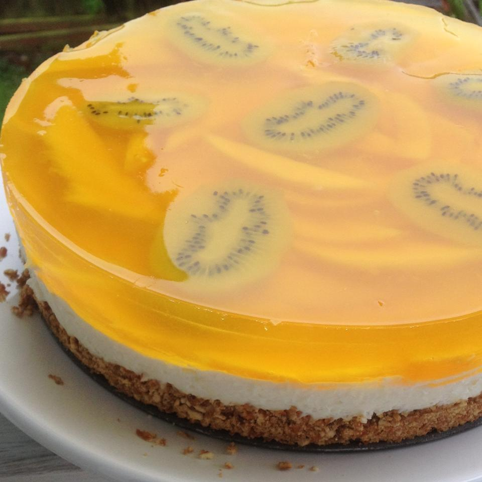

Lemon Pretzel Salad with Mango and Kiwi

Refreshingly satisfying! Fresh lemon, mango, and kiwi are fused with fluffy cool cream cheese, all sitting atop a yummy salty sweet pretzel crust...wow, what else can you say?! It always disappears with a quickness.
Perfect for BBQs, holidays, pitch-ins, or just a tasty treat with a hot cup of tea. Enjoy!
Ingredients
Pretzel crust:
- 2 cups crushed pretzels
- 3/4 cup butter, melted
- 3 tablespoons brown sugar
Cream Cheese Layer:
- 1 cup white sugar
- 1 (8 ounce) package cream cheese, softened
- 1/2 teaspoon vanilla extract
- 1/2 lemon, juiced
- 1 and 1/2 lemons, zested, or more to taste
- 1 (8 ounce) container frozen whipped topping (such as Cool Whip), thawed
Fruit Layer:
- 1 and 1/2 cups boiling water
- 2 (3 ounce) packages lemon-flavored gelatin mix (such as Jell-O)
- 1/2 cup fresh lemon juice, strained
- 1 mango, peeled and chopped
- 1 kiwi, peeled and sliced
Steps
- Preheat oven to 350 degrees F (175 degrees C).
- Mix crushed pretzels, butter, and brown sugar together in a bowl; press into a 9x13-inch baking dish.
- Bake in the preheated oven for 10 minutes; set aside to cool completely. Crust will be soft when taken out of the oven and will harden as it cools.
- Mix white sugar, cream cheese, and vanilla extract together in a large bowl until smooth. Stir juice from 1/2 lemon and lemon zest into cream cheese mixture and mix well; fold in whipped topping. Spread cream cheese mixture evenly over cooled crust; refrigerate until set, about 30 minutes.
- Mix boiling water and lemon-flavored gelatin mix together in a bowl until dissolved. Add 1/2 cup strained lemon juice and mix well. Refrigerate gelatin mixture until slightly thickened, about 1 hour.
- Ladle enough gelatin mixture over cream cheese layer to cover, setting remaining gelatin mixture aside. Arrange mango and kiwi onto gelatin mixture layer and pour remaining gelatin mixture over fruit layer. Refrigerate until completely chilled and set, about 2 hours.